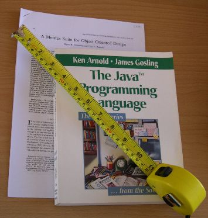

 The program ckjm calculates Chidamber and Kemerer object-oriented metrics by processing the bytecode of compiled Java files. The program calculates for each class the following six metrics proposed by Chidamber and Kemerer.
In addition it also calculates for each class
If you use this tool in your research, please cite it as follows.
Diomidis Spinellis.
Tool writing: A forgotten art?
IEEE Software, 22(4):9–11, July/August 2005.
(doi:10.1109/MS.2005.111).
I wrote this program out of frustration over the lack of reliable programs to calculate the Chidamber and Kemerer object-oriented metrics I needed to illustrate some concepts in my book Code Quality: The Open Source Perspective. The programs I found on the web were either incomplete (they calculated only some of the metrics), or unreliable (they calculated results that were obviously wrong), or extremely inefficient (they required GB of RAM and hours of processing). Ckjm is mean and lean, following the Unix tradition of doing one thing well. It will not automatically recurse directories looking for the files you want measured and it does not offer a GUI. However, it does this job thoroughly, and efficiently: on a 1.6GHz Pentium-M machine it will process the 33MB of the Eclipse 3.0 jar files (19717 classes) in 95 seconds.
To run the program you simply specify the class files (or pairs of jar/class files) on its command line or standard input. The program will produce on its standard output a line for each class containing the complete name of the class and the values of its metrics. This operation model allows the tool to be easilly extended using textual pre- and post-processors.
From version 1.2 and onward ckjm can be used as an ant task, and can also directly generate XML output. You can post-process the XML output with XSLT to generate nice-looking reports. Here is a report example using simple report style and here is an example using the fancy report style. XSL files for both report styles are part of the distribution.
ckjm is now also available through the following projects.
|
|
(C) Copyright 2005-2010 D. Spinellis.
May be freely uploaded by WWW viewers and similar programs.
All other rights reserved.
Last modified: $Date: 2010/05/22 10:27:16 $ |
{kind=link}